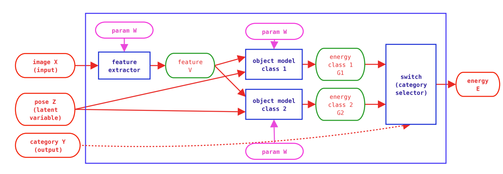

通过能量模型(Energy-based model, EBM)，将模型预测概率，转换为能量值。模型预测倾向于高概率结果，物体运动倾向于低能量区域，将高概率的预测映射到低能量区域，这样非常自然的将机器学习与物理相联系。
Reference: * Loss Functions for Discriminative Training of Energy-Based Models
这种映射是非常重要的，将机器学习的问题天然的转移到物理框架中，从而可以借助之前的已有的物理工具分析信息流动的问题。很自然地会想到如下的一些问题： 1. 这个映射过程是如何构建的？ 2. 映射限制是什么？适用于什么损失函数？ 3. 这种映射的代价是什么？或者说局限性是什么？
Energy-Based Models
经典的机器学习流程是通过输入数据X来预测其标签Y，表示为P(Y|X)，训练的目标是通过调整恰当的权重W以最大化P(YTrue|X)。在这个过程中设计三个关键的量W, Y, X，EBM将能量与关键量相关联构造E(W, X, Y)，预测结果表示为$Y=\argmin_Y E(W,Y,X)$。
通过构造函数E，将概率预测与能量极值相关联。可以发现，概率模型给出的是归一化之后的概率分布，EBM给出的结果是一个值，需要转化过程将EBM输出的值转化为概率分布： $$\begin{align} P（Y|X,W）=\frac{\exp{(-\beta E(W,Y,X))}}{\int_y \exp{(-\beta E(W,y,X))}}. \end{align}$$ 因为EBM形式与格点模型一致，这里直接采用波尔兹曼分布。由于采用了波尔兹曼分布，我们将面对积分∫yexp (−βE(W, y, X))即配分函数，因此这里必须限制可积性。
通过以上两步，可以很顺畅的将监督学习损失函数直接改写为能量模型，之后分析各种性质与行为。例如对于MSE，可以定义E(W, Y, X) = ∑y, x(y − G(W, x))2，其中G为数据通过神经网络给出的结果。
从这里来看映射是很直接的，限制条件只需要是有监督，并且可积分。
Examples of EBMs
EBM不局限于特定任务，在分类、回归和有约束的任务上上有广泛的应用。
对于分类任务，可以将模型根据不同的类别写出能量函数类型： $$ E(W,Y,X)=\sum_i^k \delta(Y-i)G(W,X),$$ 其中i表示类别，k是总类别数。
对于回归任务，直接给出能量函数类型： $$ E(W,Y,X)=\frac{1}{2}||G(W,X)-Y||^2.$$
对于约束任务，例如学习X2 + Y2 = 1，没有直接的映射关系，因此通过两个能量模型组合： E(W, Y, X) = C(Gx(Wx, X), Gy(Wy, Y)), 其中C衡量差距。
Append
也可以考虑在模型中加入隐变量Z，模型的形式改写为： $$\begin{align} E(W,X,Y)=\min_{z\in {Z}}E(W,X,Y,Z). \end{align}$$
这里的隐变量可以表示一些模型的操作。以下是一个加入隐变量训练额过程： 
文章还有另一个问题值的讨论，什么是好的能量面？从能量的绝对值来看，分类正确的能量应该是最低的，同时不同类别最低的能量值之间应该有间隔(margin)；从能量的相对值看来，能量的梯度是决定网络能否寻找到最低的值关键因素，因此相对值变化需要平滑。